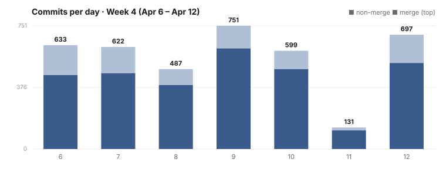
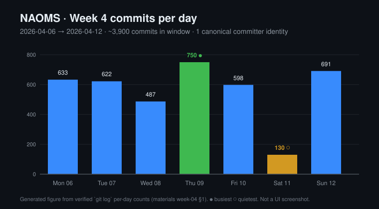

Four things changed this week
One per major area. Almost none of it is visible on screen — this is the week the plumbing got serious and the pixels took a break.
Every change to your data goes through one signed path
The direct-write shortcut is gone across the codebase. Every write is now signed, recorded and projected the same way, so nothing can write around the record.
Our own checker started repairing what it finds
A three-tier engine makes mechanical edits itself, calls a local model for rules needing judgement, and re-checks each file so one bad edit cannot poison a run.
Three commitments were written down as law
Wholeness, Honesty and Mystery were appended to the design principles as axioms that outrank every other decision the code, the policies or the interface can make.
Fifty-nine packages were audited against themselves
Seven dimensions, fifty-nine packages, forty-six gaps found and written down before any of them was fixed — including whether each package can say why it exists.
One door in
The feature: every change to your stored data — every memory, every grant, every setting — travelling through a single path that signs it, records it, and updates the queryable view from that record.
Before: code could write two ways. A raw direct write here, an audited append there. Now: there is one door, and the raw one has been bricked shut across the whole codebase.
Stored data here means everything the system holds on your behalf: the memories themselves, the grants that say who may read them, the settings that shape how it behaves. All of it moves through the same door now.
Two write paths is not an unusual state for software to be in. It is the ordinary result of a system growing: the careful path is built for the cases that need it, the quick path survives from before, and both are correct in isolation.
A system with two write paths does not have an audit trail; it has an audit sample. Half the writes skip the signing, the audit record and the projection step. What is left is state whose provenance nobody can establish, which is the same as state you cannot trust.
Why the projection has to come from the log
Underneath everything is an append-only log: entries are added at the end and never edited or removed, so what you have is a history rather than a current picture. Every message, membership grant and memory is a signed, hashed entry in it.
The picture on screen is not that log. It is a graph of people, messages, memories and the links between them, and it is derived — a projection step reads each new entry and updates the graph to match.
Replaying is the useful property. A projection can be rebuilt from scratch at any time, which means a bug in the view is a bug you can fix and re-derive rather than a corruption you have to repair in place.
That arrangement only holds if the record is complete. One unaudited write and the graph contains something the log cannot account for, and from then on the two disagree in a way nothing detects.
The three properties you cannot have halfway
Provability comes first. Every state change has a signed entry behind it, so "who changed this, and when, and under what grant" stops being an investigation and becomes a lookup — because there is no other way for it to have changed.
Ordering comes second. The log gives a total order within a scope, and the graph is a deterministic function of that sequence: replay the entries, get the same graph, every time.
Enforceability is the one that pays for the other two. Once there is exactly one door you can put a guard on it, and an automated check now flags any direct write to the graph in code that ships.
A one-time cleanup decays. A cleanup plus a rule that fails the build when someone re-opens the window holds, and the difference between those two outcomes is the whole argument for doing this work at all.
The unglamorous middle of the migration
What was built. The direct-write shortcut was funnelled into the single audited path everywhere it appeared. That change broke 130 import sites at once, which is the honest measure of how widely the second door had been used.
Most of the week's effort went not into building the door but into making it good enough to deserve every write. A day went into making the audited path refuse a malformed call outright, rather than accepting it and recording something the log could not account for later.
Another added integration tests and fixed real defects in the new path inside real feature handlers — the voice and forecast code — caught by tests written the same day. A third hardened the boundary so the path is validated at the moment the system starts.
That is the part that never reaches a changelog: the single door exists, it sticks, and every handler routed through it finds a new way it sticks. The work was recorded complete on 2026-04-09, two days after that middle day, and is dated there rather than backdated.
A shortcut is cheaper at the moment it is used, which is why it spreads. Each individual bypass is a small, defensible saving; the aggregate is a system that cannot account for its own state.
Breaking 130 things in one afternoon is the kind of pain you pay once so that you never again have two ways to write. Spread over months it would have been cheaper per day and never finished, because a migration with both roads open has no forcing function.
The 130 number is also a measurement nobody would have gathered otherwise. You do not set out to count how many places bypass the audited path; you find out by closing it.
What one door does not yet prevent
The direct write was not deleted outright. It survives behind a deprecated, underscore-prefixed name that the checker flags at every remaining call site, which is a louder state than absence and an easier one to audit.
Silent mutation is exactly what the honesty commitment written down two days earlier forbids, which is why this migration is the first real test of whether those commitments outrank convenience (the three axioms).
A house with one locked door is securable, and the guarantee is only ever as strong as the narrowest way in. The engineering work in a design like this is not building the door; it is making sure there is not a second one, and then nailing the remaining one shut so it stays the only one.
The cost is real: one path is a bottleneck by design, and every future feature that wants to write has to go through it. That constraint is the feature, and the longer account of the migration is one door in.
Consent decisions ride the same principle one level up. Every allow or deny, with the reason and the rule that produced it, is written to a record the storage layer refuses to update or delete — append-only in fact, though not yet per-entry signed, which the design asks for and the code does not yet do (proof you said yes).
Going looking for what is wrong, on purpose
The feature: a review discipline that hunts for our own defects before anyone else meets them, paired with a checker that repairs the findings a machine can safely repair.
Before: the checker produced a list, a person worked through it, and "done" meant a status field said done. Now: gaps are inventoried package by package before any is closed, adversarial passes go looking for what green tests missed, and the boring violations never reach a person at all.
Rule checkers accumulate findings faster than people clear them. A list of several thousand violations is not a to-do list; it is a backlog everyone learns to scroll past, and the checker stops changing anything.
Counting the gaps before closing any of them
The sweep read like someone methodically opening every cupboard. The first step was building the place to write gaps down — an inventory that grows as you find things, rather than a memory that quietly forgets the awkward ones.
Then a running tally, mid-sweep: twenty-seven gaps across forty-two verified packages, the count rising as coverage widened. Then the day's headline number, forty-six gaps across fifty-nine packages.
Forty-six is not zero, which would have been a lie, and not "some cleanup needed", which would have been a different kind of lie. It is a specific, countable, attributable list, each gap belonging to a named package.
The temptation in a sweep is to fix as you go: find a gap, close it, feel productive, move on. If you fix as you find, you never learn the true size of the problem, and you stop when you are tired rather than when you are done.
A complete inventory turns an open-ended chore into a bounded one. The discomfort of seeing the whole list at once is the price of being able to finish it (counting everything wrong with your own code).
The seventh dimension was whether the code can say why it exists
Six of the seven dimensions are the ones you would guess: design gaps, test coverage, documentation, code quality, security. The seventh was ethics, and it was not a checkbox.
Two passes tied subsystems — consent, identity, shared spaces, sharing, vault, stewardship — back to the three commitments written down two days earlier. The question stopped being "does this package have tests and docs" and became "can this package explain what it is for".
A gap in that dimension is a piece of the system that works but cannot say why it exists. Auditing for coverage is easy. Auditing for coherence — whether the thing you built still means what you said it would mean — is the uncomfortable one.
The quiet Saturday
Saturday was the quietest day of the week at 130 commits, less than a fifth of Thursday's volume. On paper nothing much happened. In practice one piece of work after another took its turn under an adversarial review pass.
The log records it without embellishment: ten defects found by one pass and fixed, five more by another, four in a device handler and its test signatures, a top-severity role defect alongside eight new integration tests.
The most useful entry of the day is a batch of integration tests in which seven failed on purpose, confirming nine workflow defects. The tests were not broken. The code was, and the failures were the evidence.
A passing test that never exercises the broken path is worse than no test, because it launders the defect as covered. Finding the laundered ones is the entire job of a review pass that is allowed to disagree with a green result (the day the critics found everything).
Every one of those entries is a small admission. A top-severity defect sat undiscovered in code that had passed its tests. The review did not introduce those defects; it revealed them, and the only thing it changes is who finds them first.
That is the whole bargain, and it holds only if you are the kind of people who answer a list of defects with "good, fix it" rather than "the test must be wrong". A count of defects found is a measure of how many did not reach anyone else.
A fix a machine should make, and one it should not
What was built. Three tiers. Run a rule checker across a large codebase and its findings are not one kind of thing, which is the whole reason a single "autofix everything" switch would be wrong about most of them.
The first kind of finding has exactly one correct fix, computable from the finding alone. The second has a small set of plausible fixes and choosing takes a sentence of judgement. The third needs an understanding of intent and belongs to a person.
The mechanical tier is pure text transformation: same finding, same source, same edit, and the inverse is computable, so every mechanical fix is reversible. One pass rewrote stale headers across 228 package files in a single change.
The restraint is the design work. The day a mechanical rule needs to look at a second file to decide its edit, it is no longer mechanical, and leaving it there quietly is how a deterministic repair tool starts making non-deterministic mistakes.
The second tier reaches for a model, and that model runs locally. Prompts are checked into the repository, thirteen rules opt into model assistance explicitly, and no scenario exists in which fixing a rule violation sends the source anywhere.
Which local model was not a guess. Seven candidate models were evaluated against thirteen representative findings over two hundred and seventy-three runs, scored on whether their edits survived the gate that follows them.
The gate that makes automatic editing defensible
A machine that edits code is only as useful as the check that follows it. A naive repair tool runs every edit and validates once at the end; if anything broke, the whole batch reverts, taking every good fix with the one bad one and naming neither.
The answer is to make the unit of trust the file rather than the run. Each proposed edit is applied to one file, that file is re-checked on its own, and the edit only sticks if the file still parses and still passes.
A bad suggestion reverts that file and nothing else. The good fixes in the same run are untouched, and the finding stays open for a person — which is the right outcome rather than a consolation prize.
Per-file is the important word. A run-level check tells you something went wrong somewhere; a per-file check tells you which edit to reject and lets the rest stand. One is a rollback, the other is a filter.
The obvious objection is that a per-file gate cannot catch breakage spanning files, and that is true. It is paired with the whole-tree check that runs afterwards anyway: fast local rejection in the inner loop, slow global verification in the outer one.
Each rule carries its own fix strategy, so adding a rule does not mean editing the repair engine. A rule author decides at authoring time whether their finding is mechanically fixable, model-fixable or human-only, and human-only is the default when unsure (teaching a checker to fix its own findings).
What none of it settles
The zero-violations campaign is the slow, rule-by-rule work of driving each category to nothing, and it is in progress rather than finished. The repair engine is the lever; the campaign is the work of pulling it.
The open question is what happens to a wrong edit that looks right. Every mistake caught so far has been one the per-file check could see, and a plausible, well-formed, incorrect change is a different problem that has not been tested against.
Both halves of this thread share a shape. An inventory tells you the size of the problem and a repair tool makes the work tractable, and neither one is evidence that anything is finished.
The sweep is likewise unfinished. Fifty-nine packages verified and forty-six gaps written down is an honest middle, not a celebration, and the count going up is what an honest sweep looks like before it turns the corner.
What this means, in plain terms
Most of what lands in a week belongs to the thing it landed in. A few things generalise past it. These five are the ones this week actually paid for — each learned by getting it wrong somewhere first.
Two ways to write the same state is one way plus an unaudited one
Funnelling every write through a single signed path broke 130 import sites, which is how much the second path was being used. A system with a shortcut has no audit trail, only an audit sample. The migration is finished when the old road is impassable, not when the new one exists.
Hardening applied at the wrong moment is an outage
Freezing the client's feature registry was a change that ran before the dynamic modules could register into it. Consent, vault, contacts and every other tab silently failed to load; six of more than thirty features survived (the day a frozen object broke every dynamic feature). Ask what the narrowest mechanism is before reaching for the broadest one.
Count the shortfalls before you start closing them
The sweep built its inventory first and fixed nothing that day: twenty-seven gaps across forty-two packages, then forty-six across fifty-nine. Fixing as you find feels productive and hides the size of the problem. A bounded list you can finish beats an open-ended chore you abandon when tired.
A control nobody exercised is a claim, not a control
An earlier review found re-encryption protections marked done that were dead code, disabled, or silently violated in practice — eleven gaps, five of them critical. The status was accurate about intent and wrong about reality. Verify a control by making it refuse something, not by reading that it exists.
Give an automatic editor something that can overrule it
The repair engine makes mechanical edits, uses a local model for harder rules, and then re-checks each file so a bad edit cannot poison the run. Without the third stage the first two would be an efficient way to spread a mistake. Any process that writes at scale needs a reviewer that is not itself.
How much healthier is it than a week ago?
Thirty-five database query sites were missing their error checks, which means each of them could fail and report success. That is the same failure mode as an unaudited write, arriving from the other direction: state the system believes without grounds.
The commit count is quoted as approximate because it is approximate. It is dominated by automated churn, so reading 3,900 as 3,900 hand-typed features would overstate the week by more than an order of magnitude.
Nearly 1.07 million lines were added and about 681,000 removed to produce that net figure. Both halves matter more than their difference, and neither is mostly code a person typed.
The net-line figure carries the same warning in a stronger form. It is an estimate, most of it is not hand-written code, and the churn is dominated by source, documentation and fixture files. Read it as movement rather than as output.
One committer identity is worth stating plainly. Everything in this window is attributable to a single accountable identity, so the commit count describes one pipeline's output rather than a team's headcount.
Eight true reverts across nearly 3,900 commits is genuinely low for a week this churny, and it is the one figure here that says something about quality rather than volume. Over 1,400 of the same window's commits are repairs rather than new work, which is one more reason to read the commit count as movement and not as output.
The quietest day of the week was the review day, and the coincidence is not one. A day spent auditing produces few commits and a large amount of the work that the rest of the week then has to absorb.
every change to your data now travels one signed and audited path with the shortcut bricked shut, our own checker began repairing what it finds under a per-file safety check, three commitments were written down as the law the rest of the system answers to, forty-six gaps were counted before any were closed — and one hardening change took every dynamic feature offline for a day.
Three honest notes.
Six of more than thirty features failed to load for part of 2026-04-10. The cause was a change made to harden the system, and it is reported here in the same weight as the improvements because that is what happened.
Protections had been marked done that were not done. The re-encryption review found controls recorded as complete that were dead code, disabled, or silently violated. Every status in this report is therefore verified against the record of the work rather than against a status field.
Several efforts on this list are partial and are labelled partial. Code reaching the product is not the same statement as an effort being finished, and the two are kept in separate sections below. The distinction costs a reader nothing and is the difference between a report and an advertisement.
What changed, area by area
Everything that moved this week, in rough order of how much of it moved. Per-area file counts are not available for this window, so each area is named without one rather than with a figure that cannot be reproduced.
Every change to stored data now goes through one signed, audited path, and the direct-write shortcut was removed across the codebase — a change that broke and then repaired 130 import sites.
The shortcut survives only behind a deprecated name the checker flags wherever it is still called.
A three-tier repair engine landed: mechanical edits, a local model for the thirteen rules that opt into judgement, and a per-file check that stops a bad machine edit from poisoning a run.
One mechanical pass rewrote stale headers across 228 files.
Fifty-nine packages were verified across seven dimensions and forty-six gaps written down before any was fixed, the tally rising from twenty-seven across forty-two packages mid-sweep.
The seventh dimension asked whether each subsystem can explain itself in terms of what the project says it believes.
Six separate pieces of already-finished work were put under review passes on one Saturday, returning ten defects from one pass, five from another, four in a device handler, and a top-severity role defect with eight new integration tests behind it.
Seven deliberately failing tests confirmed nine workflow defects.
Both were hardened and eleven re-encryption gaps closed — five critical, six high-severity — including device-key persistence and print-validation hardening.
The gaps came from an earlier review that found protections recorded as implemented but dead, disabled, or silently violated.
Error checks were added to all thirty-five query sites that lacked them, closing a whole class of query that could fail and report success.
A blanket freeze on the table that holds the app's tabs was replaced by a per-key guard that refuses overwrites and allows additions, after the freeze took every dynamically loaded feature offline for a day ( the day a frozen object broke every dynamic feature ).
Wholeness, Honesty and Mystery were appended as axioms above the existing principles, each load-bearing only with the other two, and placed at the top of the order everything else is measured against ( three commitments allowed to lose every other argument ).
The case for treating a yes as a signed, scoped, revocable receipt rather than a flag on someone else's server was written up, with the honest scorecard attached: shipped and tested at device pairing, append-only but not yet cryptographically chained for everyday authorisation, and designed-not-built for the portable form ( proof you said yes ).
Two essays set out why the mutual-credit work is shaped the way it is: money read as the control flow of a society, with power concentrating at who creates it, who moves it and who sets its rules ( money is control flow ); and the anthropological case that credit came before money, so a community's contribution record is a web of obligation rather than a market ( barter never happened ).
The practical stake for a person is the same in both: an economic tool nobody outside the community can switch off, and a record of who owes whom that belongs to the people in it.
Account setup in development and test now runs the genuine onboarding flow instead of a shortcut, so the thing exercised daily is the thing a person receives.
The standalone governance command was removed: governance folds into the policy engine rather than standing beside it.
Agents can now create and update planned work through the audited path, with an atomic identifier counter and projection into the queryable graph.
The write path, hierarchy types and plan node have shipped; the effort itself is still open, and its remaining gaps were folded into a successor. A facilitator-policy update also shipped this week and closed afterwards, on 04-21.
What began as a tab that failed to load grew into a unified person model — renaming the concept of a contact to a person — with seven pieces of follow-on work seeded.
The follow-ons were seeded on 04-13 and belong to the next window rather than this one.
Three incidents are recorded below. One was the side effect of a change meant to make things safer, one was found by the sweep rather than caused by it, and one was a typing accident — which is a fair spread for a week whose work was almost entirely structural.
What broke, and what it cost
Freezing the feature registry froze it before the dynamic modules could register into it, and a rejected addition in that code path fails silently rather than raising.
Consent, vault, contacts, shared spaces and every other tab failed to load; six of more than thirty features survived. Reverted the same day, 04-10.
The client was rendering raw error text as live markup, so a message returned by a failed request could carry an injection.
Fixed on 04-11 by building the elements explicitly and rendering text as text.
A stray comment terminator inside a path string in a documentation comment ended the comment early and broke the boot.
Fixed 04-12, and a new checker rule was written the same week so the class of mistake is now detected rather than remembered.
Five efforts sit below, each with real work landed this window and none of them finished. Reading a landed change as a delivered effort is precisely the error the re-encryption review turned up.
Landed but not finished
The umbrella audit that generated much of the week's churn, and the source of the forty-six gaps.
The repair engine is the lever; the campaign is the slow rule-by-rule work of pulling it.
The first phase of wiring landed.
with 227 errors outstanding.
It forced a mandatory alignment and human plan approval this week before proceeding.
One effort stopped this week, and it stopped in the useful way: absorbed rather than abandoned, with the decision written down on a date.
The one that stopped
It did not ship and it was not abandoned: its design and remaining work were absorbed into the voice-and-video-over-mesh effort, with the supersession finalised on 2026-04-21.
Cancelling a feature whose right home turns out to be a larger effort is a decision, and saying so beats leaving a half-built thing to rot.
